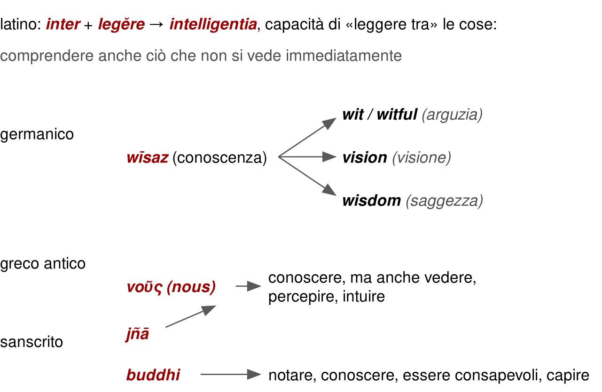
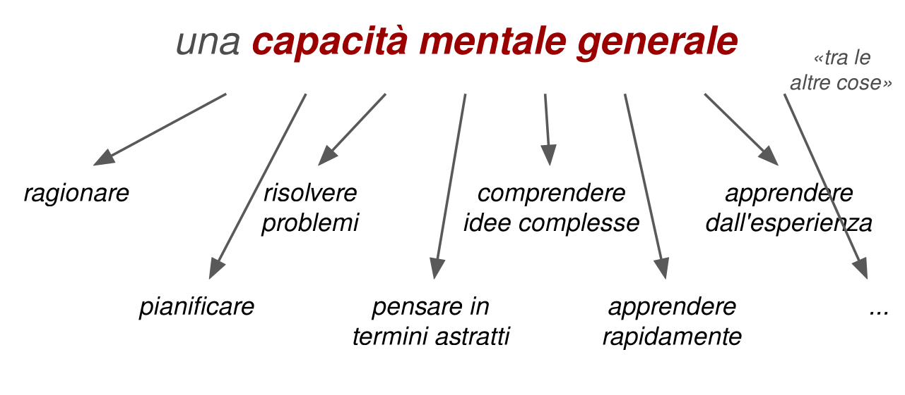
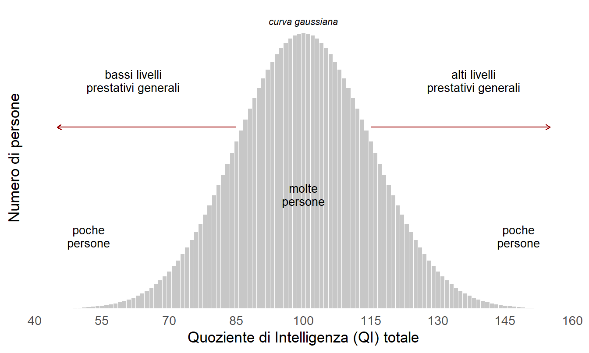

2 Che cosa chiamiamo intelligenza
Possiamo dire che gli esseri umani sono intelligenti? Siamo l’unica specie che si è data da sola il nome di sapiens. Siamo anche una specie che altera il proprio ambiente, sa di farlo e non riesce a smettere. Il paradosso è antico, e Sternberg ha dedicato un intero volume a una sua versione in piccolo: perché persone intelligenti fanno a volte cose tanto stupide (Sternberg, 2002).
La domanda sembra imbarazzante solo perché alla parola «intelligenza» chiediamo troppo: la rapidità del ragionamento, la saggezza delle scelte, talvolta perfino il carattere. Nessun concetto regge un incarico così ampio. Questo capitolo restringe il campo partendo da dove parte chiunque, il senso comune, e arriva a una definizione di lavoro, a un numero, il QI, e alle obiezioni che quel numero si porta dietro.
2.1 Gli indizi di tutti i giorni
A dieci anni, come si riconosceva un compagno di classe molto intelligente? Prendeva voti alti, parlava quasi come un adulto, capiva subito le regole di un gioco nuovo, finiva il compito per primo, era bravo in matematica. Quando spiegava qualcosa agli altri, rendeva semplici cose difficili.
Altri indizi sono più interessanti. Non è che non sbagliasse mai: sapeva trovare gli errori e correggerli. Non è che non si mettesse mai nei guai: sapeva come uscirne. Non era necessariamente il più obbediente. E se copiava, lo faceva in modo efficace.
Questi indizi non sono sbagliati. Hanno però un difetto: mescolano cose diverse. Possedere una conoscenza, acquisirla in fretta e sapere quando usarla sono operazioni distinte; l’attenzione e l’obbedienza sono altro ancora. Anche la buona condotta va tenuta fuori: capire le conseguenze di un’azione non obbliga a scegliere quelle migliori per tutti, e si può ragionare in modo eccellente al servizio di uno scopo pessimo.
Non è pedanteria. Se la definizione includesse ogni qualità desiderabile, una buona decisione sarebbe intelligente per definizione e una cattiva sarebbe stupida per definizione. Avremmo un’etichetta per commentare i risultati e nessuna possibilità di spiegare come si producono.
2.2 Che cosa dicono le parole
L’etimologia offre un primo aiuto. Intelligentia viene dal latino inter e legĕre: leggere fra le cose, cogliere ciò che non si vede subito. Altre lingue hanno percorsi analoghi, in cui conoscere si intreccia con vedere, percepire e capire (Figura 2.1).
Le parole, però, portano con sé anche sfumature morali, caratteriali e sociali. Warne ne raccoglie alcuni esempi (Warne, 2020). Nella cultura cinese l’intelligenza include l’uso etico della conoscenza, vicino alla saggezza. In Africa orientale, in India e altrove la tenacia nel portare avanti un compito è considerata una capacità cognitiva. I Cree del Canada vi includono riflessività, pazienza e perseveranza; in Zimbabwe vi rientrano competenze sociali come prendersi cura di amici e sconosciuti.
Conviene allora ancorarsi al significato comune? La biologia e la medicina hanno risposto di no da tempo: si sono date un gergo tecnico, spesso latino e greco, che nessuno confonde con il linguaggio di tutti i giorni. Nessun medico discute se un’epatite sia «davvero» un’infiammazione nel senso del bar. La psicologia scientifica avrebbe potuto fare lo stesso con più decisione. Non l’ha fatto, e paga il prezzo di usare una parola che tutti credono di capire.
2.3 Le definizioni degli esperti
Se il senso comune non basta, si può chiedere agli esperti. Il guaio è che ciascuno ha la sua definizione. Nel 1921 il Journal of Educational Psychology interpellò diversi studiosi («Intelligence and Its Measurement», 1921). Per Pintner l’intelligenza era la capacità di adattarsi a situazioni relativamente nuove; per Woodrow, quella di acquisire abilità; per Dearborn, quella di trarre profitto dall’esperienza; per Terman, quella di condurre un ragionamento astratto. Settantasette anni dopo, un dibattito italiano fra studiosi di discipline diverse, dalla psicologia all’informatica, produsse una varietà simile, dal comportamento che massimizza il beneficio dell’organismo alla capacità di costruirsi rappresentazioni interne del mondo (Cornoldi, 2007).
Sotto la varietà, però, c’è una traiettoria. Da sempre le definizioni insistono su adattamento e apprendimento: rispondere a richieste nuove quando le abitudini non bastano, e migliorare con l’esperienza. Dagli anni Cinquanta la rivoluzione cognitiva ha aggiunto le rappresentazioni mentali, le operazioni interne, la soluzione di problemi attraverso l’elaborazione di informazione. Chi si rappresenta la logica di un problema può confrontare possibilità e scartare un’ipotesi prima di provarla.
Sono concetti utili, perché danno finalmente una base teorica. Ma non sono mai stati strettamente necessari per studiare e misurare bene l’intelligenza. I test funzionavano prima della rivoluzione cognitiva, e funzionerebbero anche se le sue teorie venissero sostituite domani.
La formulazione oggi più citata è di Gottfredson, firmata da decine di ricercatori: l’intelligenza è una capacità mentale generale che, tra le altre cose, implica ragionare, pianificare, risolvere problemi, pensare in termini astratti, comprendere idee complesse, apprendere rapidamente e apprendere dall’esperienza (Figura 2.2). Non è l’apprendimento dai libri né l’abilità nel sostenere test; riflette una capacità più ampia di afferrare ciò che ci circonda, di dare senso alle cose e capire che cosa fare (Gottfredson, 1997, p. 13).

«Generale» indica l’ampiezza del campo di applicazione, non l’uniformità dei risultati. La stessa capacità interviene in compiti diversi, e una persona può riuscire meglio in alcuni che in altri. Se l’intelligenza sia una cosa sola o molte è la domanda del capitolo sul fattore g.
2.4 Un’onesta definizione operazionalista
Nel 1923 Boring propose una via d’uscita più spiccia: l’intelligenza è ciò che misurano i test di intelligenza (Boring, 1923). Sembra una battuta, ed è stata spesso citata come tale. In realtà è un’ammissione onesta. Storicamente l’interesse a misurare l’intelligenza è sempre stato molto più forte dell’interesse a definirla, e per ragioni pratiche solide: scuole, eserciti e cliniche avevano bisogno di decidere prima che i teorici si mettessero d’accordo.
Il rischio, naturalmente, è la circolarità: un test misura l’intelligenza perché l’intelligenza è ciò che il test misura. Se ne esce solo mettendo alla prova le misure con dati indipendenti, come si vedrà nel capitolo sulla qualità della misura.
La stessa diffidenza verso la parola spiega i nomi alternativi. In genetica del comportamento, psicologia del lavoro, psicometria applicata ed economia si preferisce spesso parlare di abilità mentale generale (GMA, molto frequente), abilità cognitiva generale, abilità generale o semplicemente g. Quest’ultima sigla è classica nella letteratura psicometrica e ha un significato tecnico più ristretto: il fattore comune ricavato dalle correlazioni fra prove diverse. Per il resto del libro basta un glossario minimo:
- abilità mentale (o cognitiva) generale, GMA o g: la cosa che si vuole misurare;
- QI: l’indicatore numerico con cui la si stima.
Operativamente, comunque, il termine resta quasi universale per l’indicatore: il quoziente di intelligenza, o QI. È un indicatore di differenze individuali: esprime quanto bene una persona se la cava, rispetto ad altre della stessa età, su una scala standardizzata. Il QI non è g: g appartiene a un modello delle relazioni fra misure, il QI è il risultato concreto di uno strumento. Sono strettamente legati, ma non coincidono (Neisser et al., 1996, p. 78).
2.5 Perché un numero conta tanto
A questo punto l’obiezione è legittima. Perché una cosa che non sappiamo bene che cosa sia, che non sappiamo nemmeno come chiamare e che forse non è neppure «una cosa» dovrebbe essere così importante?
La ragione, prima ancora che teorica, è operazionalista. In un’ora o poco più, con i test, si ottiene una stima robusta, affidabile e stabile di un indicatore che è fra i più potenti predittori di esiti a lungo termine disponibili in psicologia delle differenze individuali (Deary, 2012; Warne, 2020):
- successo scolastico: voti, completamento degli studi, anni di istruzione, con correlazioni dell’ordine di 0,40–0,60 (Roth et al., 2015); in parte è ovvio, perché i primi test furono costruiti proprio per questo scopo;
- prestazione lavorativa: rapidità di apprendimento e produttività, soprattutto nei lavori di complessità medio-alta, con correlazioni fra circa 0,20 e 0,50 (Schmidt & Hunter, 2004);
- posizione sociale raggiunta: reddito e status socioeconomico, anche al netto del punto di partenza familiare (Strenze, 2007);
- salute e longevità: meno psicopatologia, minore mortalità, migliore salute fisica; le associazioni sono più piccole, ma una deviazione standard in più di QI in età giovanile si accompagna a un rischio di morte inferiore di circa un quarto (Calvin et al., 2011).
Ognuno di questi legami ha un capitolo dedicato nella parte su scuola, salute e lavoro, con i suoi limiti. Qui conta un punto solo: prevedere bene un esito è una prova importante a favore di una misura, ma non spiega perché la previsione funziona. Qualità della misura e spiegazione causale sono domande diverse.
2.6 Come si arriva al QI
Proprio perché la capacità da misurare è generale, nessun test particolare è ideale da solo. Si preferisce comporre prove di natura diversa: completare una tabella di figure scegliendo il pezzo mancante, rispondere a domande di cultura generale o spiegare il significato di una parola, ripetere una serie di cifre, ricordare una posizione, riconoscere quali figure sono uguali a un modello dopo una rotazione, costruire un disegno con dei cubi, associare simboli a cifre il più in fretta possibile (Figura 2.3). Ogni prova ha i suoi difetti particolari; mettendone insieme molte, i difetti pesano meno.
![Sei riquadri di esempi. Primo: una tabella tre per tre di figure, cerchi, quadrati e triangoli, vuoti, attraversati da una linea o da una croce, con l'ultima casella vuota e sei alternative numerate. Secondo: due domande scritte, a quale evento storico è associato l'anno 1789 e che cosa significa ineffabile, con quattro alternative. Terzo: la serie di cifre 1, 7, 4, 3, 9, 2, 8 da ripetere e una griglia quattro per quattro con cinque caselle colorate, accanto a una griglia vuota in cui riprodurle. Quarto: una figura a forma di L con un punto e cinque figure ruotate, alcune delle quali sono la sua immagine speculare. Quinto: un modello di quattro quadrati divisi in diagonale fra rosso e bianco, da ricostruire con i cubi. Sesto: una chiave che associa le cifre da 1 a 6 a sei simboli e una fila di cifre sotto cui scrivere i simboli, con i primi due già completati.](che-cosa-e_files/figure-html/fig-item-1.png)
Il punteggio di ciascuna prova viene standardizzato, cioè confrontato con quello di un campione di riferimento della stessa età; i punteggi standardizzati vengono sommati e il totale viene riportato sulla scala del QI. Su quella scala la media è 100 e la deviazione standard, di solito, 15. La maggior parte delle persone si concentra intorno alla media, e i livelli prestativi molto bassi o molto alti sono rari (Figura 2.4).

Due conseguenze vanno fissate subito. La prima: il QI è una posizione relativa. Ha senso solo nel confronto con le norme, cioè con il campione su cui il test è stato tarato, e il confronto è legittimo solo se quella popolazione è pertinente alla persona valutata (American Educational Research Association et al., 2014, standard 5.8). La seconda: la scala non ha uno zero naturale né un’unità di intelligenza. Un QI di 120 non significa aver risolto il 120% dei problemi, né avere il 20% di intelligenza in più di chi ha 100. Il capitolo sulle distribuzioni spiega il meccanismo in dettaglio.
2.7 Obiezioni ai test
Chi vede per la prima volta un test di intelligenza di solito protesta. Perché queste banalità dovrebbero rappresentare la mia intelligenza? Perché non proporre problemi davvero complessi e articolati? Perché non valutare che cosa una persona sa fare e produrre nella realtà? E perché affidarsi a vecchi test comportamentali, invece di sfruttare le neuroscienze?
La prima risposta è che nessuna delle prove viste sopra è l’intelligenza. L’intelligenza si riflette in tutte, e in molte altre cose. Una singola prova è un campione piccolo e imperfetto; molte prove diverse sono un campione migliore.
La seconda riguarda il formato. Si preferiscono compiti standardizzabili, con risposte giuste ben identificate, somministrabili a molte persone in tempi ridotti. Un problema molto articolato fornisce un solo risultato dove servirebbero decine di osservazioni: poca granularità, poca attendibilità, e la difficoltà di valutare processi e risultati in modo uguale per tutti.
La terza spiega perché molti compiti sembrano strani. L’obiettivo è vedere la potenza del motore, non quanta strada abbia già fatto l’automobile. Un compito che misura soprattutto ciò che una persona ha già avuto occasione di imparare dice molto sulla sua storia e poco sulla sua capacità di affrontare il nuovo. L’eccezione importante è la competenza verbale: il vocabolario è appreso, eppure si rivela un buon indicatore della capacità generale. Una spiegazione plausibile è che la maggior parte delle parole non viene insegnata: se ne ricava il significato dai contesti, e farlo è già un piccolo problema da risolvere.
C’è infine la filosofia operazionalista: l’importante è che i test funzionino. È una posizione difendibile solo se il funzionamento viene dimostrato, con dati, per ogni uso che se ne fa. «Sembra artificiale» e «sembra realistico» sono impressioni; la qualità di una misura si giudica dalle evidenze.
Quanto alle neuroscienze e alla genetica, il loro contributo concettuale è eccellente: hanno mostrato, per esempio, che g ha correlati biologici reali. La loro capacità predittiva, però, resta modesta. Il miglior indicatore cerebrale singolo è ancora un dato quasi banale come il volume complessivo del cervello, che correla con il QI intorno a 0,24 (Pietschnig et al., 2015). E il criterio con cui si giudicano queste misure resta comunque il comportamento: un indice cerebrale interessa perché predice la prestazione, non il contrario. Il capitolo su cervello e intelligenza riprende la questione.